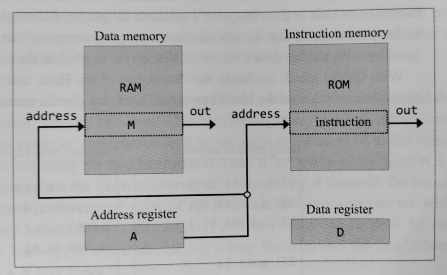
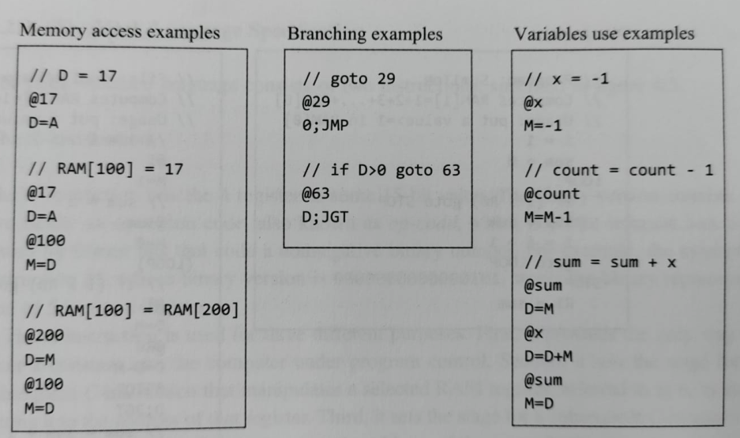
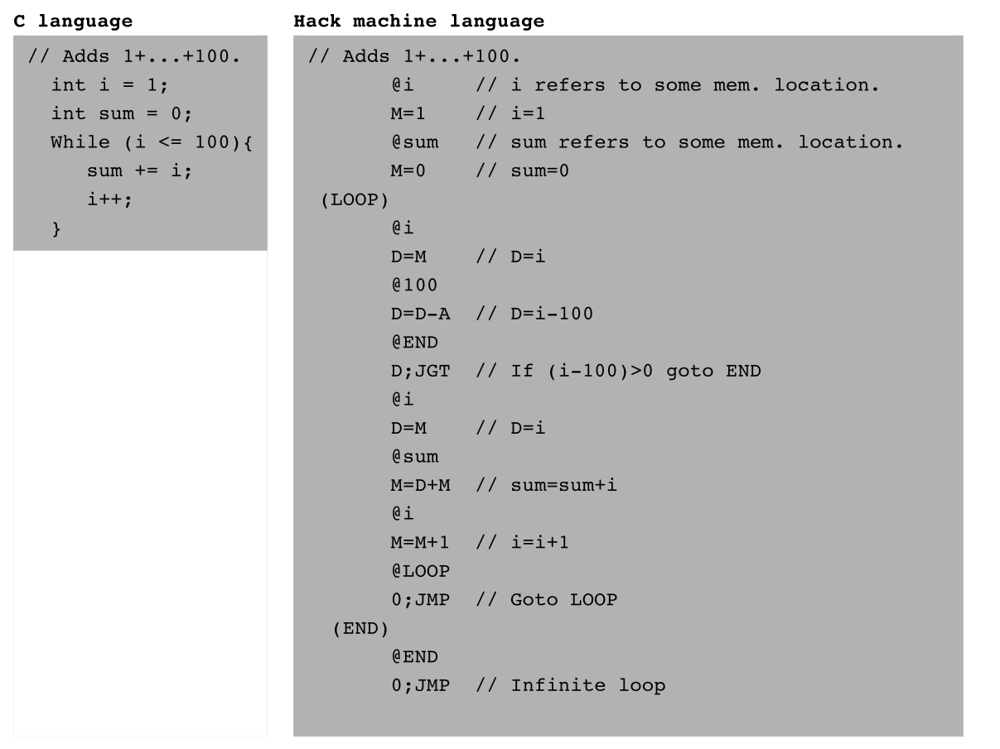
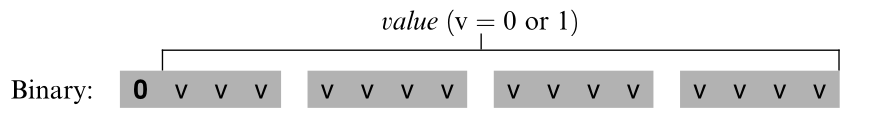
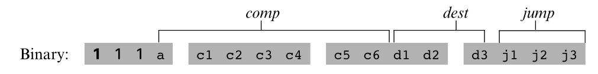
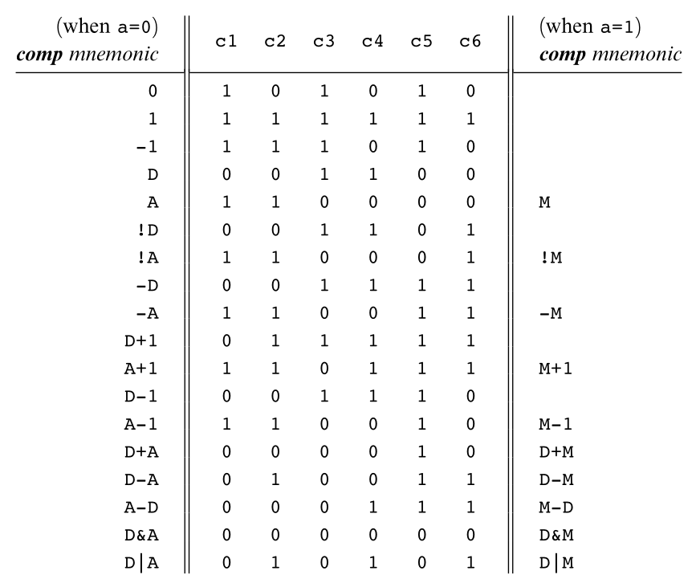
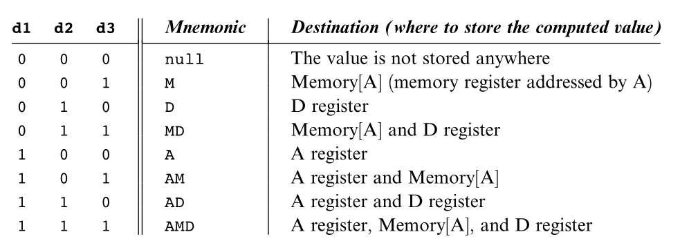
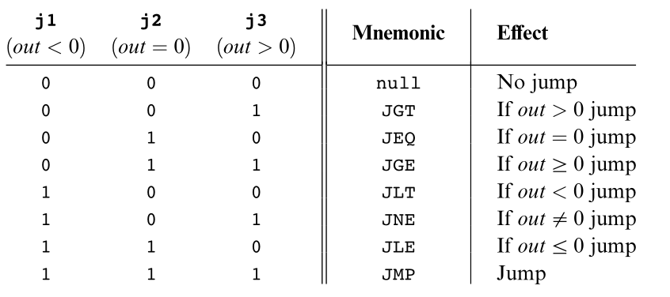
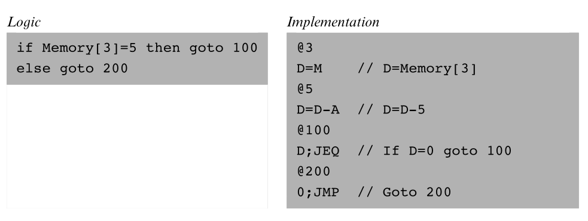
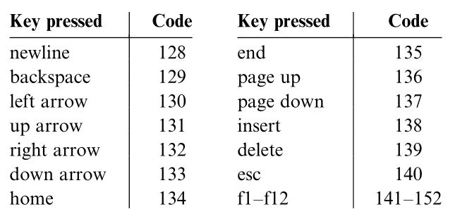

Hack Machine Language
Instructions, symbols, and memory-mapped input/output.
The Hack Memory System

- ROM stores program instructions.
- RAM stores program data.
- A can hold a value or select an address in RAM or ROM.
- D stores and manipulates data.
- M denotes the selected data-memory word,
RAM[A].
Next: recall what small Hack programs look like.
Hack Assembly Examples

In each example, identify where A is being used as a value, a RAM address, or a jump address.
Add the Integers from 1 to 100
Termination convention: In Hack, the program stops running when it enters an infinite loop. The infinite loop at the end is therefore the standard way to “terminate” a Hack program.

Next: specify the two instruction types used by this program.
Loading the A Register
@value // value is a non-negative decimal number
// or a symbol that refers to such a numberThe A-instruction stores the specified value in the A register.

0000 0000 0000 0111means@7Three Uses of @value
- Enter a constant.
@5places the binary representation of 5 in A. - Select data memory.
@17 // sets A to address 17 D=M // copies RAM[A], which is RAM[17], into D - Select a jump destination.
@17 // sets A to address 17 0;JMP // jumps to address 17 in ROM; // the next instruction is read from ROM[17]
The same A register supports three roles; the following instruction determines how its value is interpreted.
Read and Encode A-Instructions
What value does @21 place in A?
Give the binary form of the A-instruction @17.
0000000000010001Decode 0000000000010001.
@17Does @100 read RAM[100]?
A=100.Next: introduce the instruction that computes, stores, and jumps.
Symbolic and Binary Fields
A C-instruction computes a value, optionally stores it, and optionally jumps.
dest=comp;jump
111a cccccc ddd jjj111Identifies a C-instruction; the two bits after the leading 1 are reserved and fixed to 1.
a cccccccomp: what the ALU computes.
ddddest: where the result is stored.
jjjjump: which instruction executes next.
If dest is empty, omit =. If jump is empty, omit ;.
Next: examine each field in order—computation, destination, then jump.
Separate the Three Fields
For each symbolic C-instruction, identify dest, comp, and jump.
| instruction | dest | comp | jump |
|---|---|---|---|
D=M+1 | D | M+1 | empty |
D;JGT | empty | D | JGT |
0;JMP | empty | 0 | JMP |
MD=D-1 | MD | D-1 | empty |
The Computation Specification

DandAname registers;MdenotesMemory[A].+and-are 16-bit two's-complement operations.!,|, and&are bitwise NOT, OR, and AND.- The
a-bit chooses A or M; the sixc-bits match the Hack ALU controls. - Seven bits could encode 128 patterns, but only these 28 functions are documented.
D-1111 0 001110 000 000The computation field 0 001110 asks the ALU for D-1. Destination and jump are both 000, so the result is neither stored nor used to jump.
Encoding Computations
Start with the format 111a cccccc ddd jjj. Here, both destination and jump are empty, so their six bits are 0.
D-1111 0 001110 000 0001110 0011 1000 0000D|M111 1 010101 000 0001111 0101 0100 0000-1111 0 111010 000 0001110 1110 1000 0000Changing A to M in a documented pair changes the a-bit from 0 to 1 while retaining the six ALU-control bits.
Use the Computation Table
Find the seven comp bits for D+A.
0 000010Find the seven comp bits for D+M.
1 000010Is D*2 a documented comp mnemonic?
Encode !M with empty dest and jump.
1111 1100 0100 0000Next: decide where the ALU result is stored.
The Destination Specification

d1stores the ALU output in A.d2stores it in D.d3stores it in M, meaningMemory[A].- Zero, one, or several destination bits may be asserted.
D=A111 0 110000 010 000The ALU outputs A. Destination bits 010 copy that result into D; jump bits 000 continue with the next instruction.
Example: Store One Result in M and D
Increment Memory[7] and store the same result in D.
@7
MD=M+10000 0000 0000 0111
1111 1101 1101 1000@7setsA=7, so M now denotesMemory[7].M+1is computed once.- The destination
MDstores that one result in bothMemory[7]and D.
Choose the Destination Bits
| desired destination | mnemonic | d1d2d3 |
|---|---|---|
| D only | D | 010 |
| A and M | AM | 101 |
| A, D, and M | AMD | 111 |
| store nowhere | null | 000 |
Next: use the ALU result to decide which instruction executes next.
The Jump Specification

- Normally, execution continues with the next instruction.
- For a jump, A must already contain the target instruction address.
- The jump condition tests the ALU output produced by the same C-instruction.
j1,j2, andj3enable jumps for negative, zero, and positive outputs.
D;JGT111 0 001100 000 001The ALU outputs D. Jump bits 001 make the computer continue from ROM[A] when D is positive; otherwise it executes the next instruction.
Worked Example: Conditional and Unconditional Jumps

out is the ALU result; a taken jump continues at the instruction address in A0;JMP?A C-instruction must specify a computation. For an unconditional jump the result is ignored, so 0 is a simple conventional choice.
Will the Computer Jump?
Assume A already contains the target instruction address.
| instruction | ALU output | jump? |
|---|---|---|
D;JGT | 7 | Yes |
D;JGT | 0 | No |
D;JLE | -3 | Yes |
0;JMP | 0 | Yes |
Avoid Conflicting Uses of A
Memory[A]A following instruction involving M treats A as a RAM address.
A C-instruction with nonzero jump bits treats A as the target instruction address.
To prevent conflict, a well-written C-instruction that may jump should not also refer to M, and an instruction involving M should not also request a jump.
Next: replace hard-coded addresses with meaningful symbols.
Which Instructions Avoid the Conflict?
D=MSafe: M, no jumpD;JGTSafe: jump, no MM;JGTAvoid: M and jump0;JMPSafe: jump, no MHow Does Hack Identify the Instruction Type?
How does Hack know whether an instruction is an A-instruction or a C-instruction?
0 means A-instruction; 1 means C-instruction. Hack can therefore identify the instruction type by inspecting its first bit.
Three Ways Symbols Enter a Program
Names such as R0, SCREEN, and KBD.
Declared using a pseudo-command such as (LOOP).
New symbols are assigned RAM addresses beginning at 16.
Assembly commands may use a numeric address or a symbol that the assembler resolves to an address.
Predefined RAM Symbols
| group | symbols | RAM addresses |
|---|---|---|
| Virtual registers | R0–R15 | 0–15 |
| Pointers | SP, LCL, ARG, THIS, THAT | 0, 1, 2, 3, 4 |
| Input/output | SCREEN, KBD | 16384, 24576 |
For example, R2 and ARG both denote RAM address 2.
User-Defined Symbols
(LOOP)- Names the ROM address of the next real instruction.
- The declaration produces no machine instruction.
- A label is declared once but may be used before or after its declaration.
@count- A symbol that is neither predefined nor declared as a label.
- The assembler assigns it a unique RAM address.
- Allocation begins at RAM address 16.
Classify and Resolve the Symbols
@R5
@SCREEN
(LOOP)
@count, first new variable
Next: use ordinary memory access to communicate with devices.
Memory-Mapped Devices
The Hack computer interacts with its screen and keyboard through designated RAM addresses.
Changing bits in the screen segment changes pixels on the physical display.
The keyboard's current key code appears in a designated RAM word.
Programs use ordinary memory instructions; no special screen or keyboard instruction is needed.
The Screen Memory Map
- Dimensions
- 512 × 256 black-and-white pixels
- Base address
SCREEN = 16384- Map size
- 8K 16-bit words
- One row
- 32 consecutive words
- Bit value
- 1 = black, 0 = white
Word address:
16384 + r × 32 + floor(c / 16)Bit within that word:
c mod 16Example: Draw the Top-Left Pixel
@SCREEN
M=1@SCREENsets A to 16384, the first word of the screen map.- That word controls the 16 left-most pixels of the top row.
M=1sets its least significant bit to 1, blackening the top-left pixel.
Draw a picture on the Hack screen by writing suitable bit patterns into the screen memory map.
Locate Screen Pixels
Which RAM word contains row 0, column 17?
RAM[16385]Which bit within that word represents column 17?
Bit 1Which address begins row 1?
16384+32 = 16416What values represent black and white?
1 = black; 0 = whiteThe Keyboard Memory Map
KBDdenotes RAM address 24576.- When no key is pressed,
RAM[24576]contains 0. - When a key is pressed, it contains that key's 16-bit code.
- Ordinary characters use their usual codes; special Hack keys use the codes shown.
@KBD
D=M // D receives the current key code
Write a program that displays the key currently being pressed on the screen.
Reason About Keyboard Input
After @KBD and D=M, what is D when no key is pressed?
What is D when the left-arrow key is pressed?
130Which jump tests whether any key is pressed?
AfterD=M, use D;JNE.Does reading KBD require a special input instruction?
Hack Machine Language
@value loads a constant or address into A.
dest=comp;jump computes, stores, and controls execution.
Predefined names, labels, and variables replace numeric addresses.
Screen writes and keyboard reads are ordinary memory accesses.